pt cm
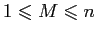
un entier tel que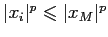
pour tout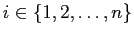
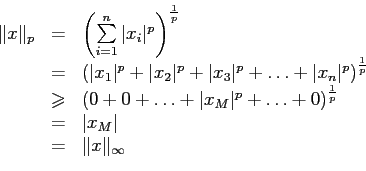
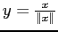
. Alors,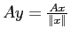
entraîne que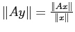
. Ainsi,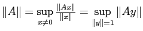
.Alors,
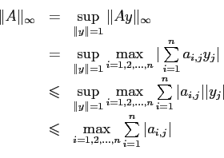
Donc,
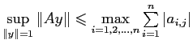
.Soit
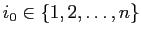
tel que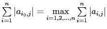
.Alors,
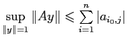
.Prenons
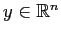
défini par
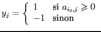
Alors,
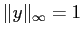
et
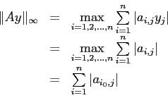
Comme
et qu'il existe un vecteur  de norme un réalisant l'égalité, on en conclut que
de norme un réalisant l'égalité, on en conclut que
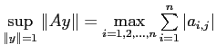
, c'est-à-dire que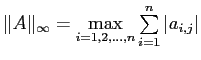
.
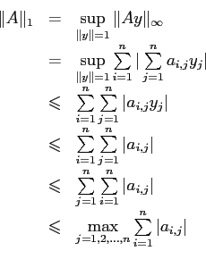
Soit
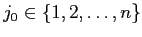
tel que .Soit le vecteur défini par
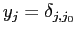
, c'est-à-dire que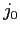
. AlorsAlors, et
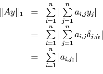
Comme
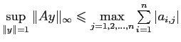
et que cette valeur est atteinte pour un vecteur
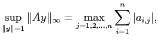
c'est-à-dire que
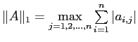
.
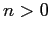
et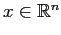
. Considérons la norme de Frobenius définie par
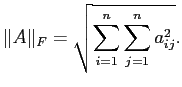
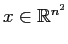
le vecteur formé des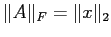
. Les propriétés sont donc trivialement vérifiées.
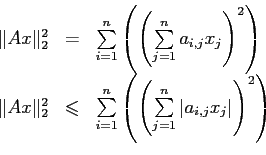
Or, en vertu de l'inégalité de Hölder avec
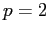
, on a que
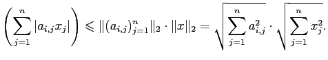
Ainsi,
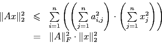
En appliquant une racine carrée de chaque côté de l'inégalité, on obtient le résultat.
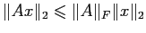
, on a que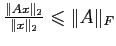
si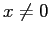
. Puisque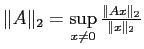
, on a le résultat.
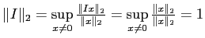
et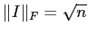
. Il suffit donc de prendre pour
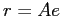
, on a que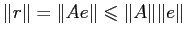
. De même,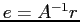
entraîne que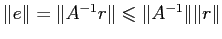
. Mais alors,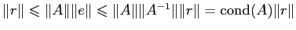
. Ainsi,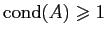
.
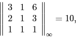
que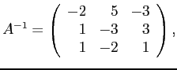
que et ainsi que .
et .
Alors,
et .
Posons
Alors, ,
et .
Posons
Alors,
et .
Comme , on a que le résidu relatif est .
Comme , on a que .